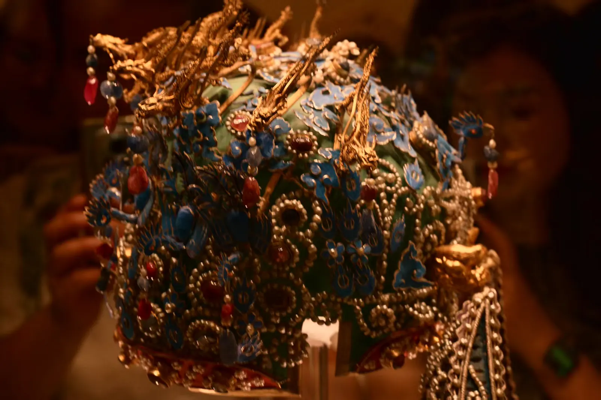
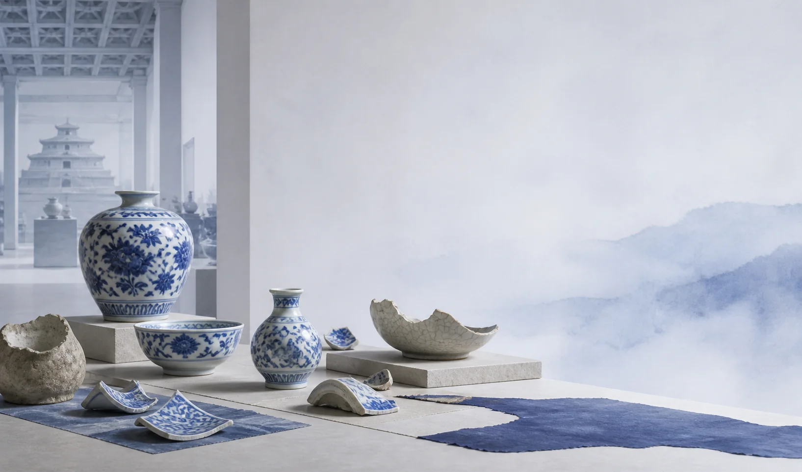
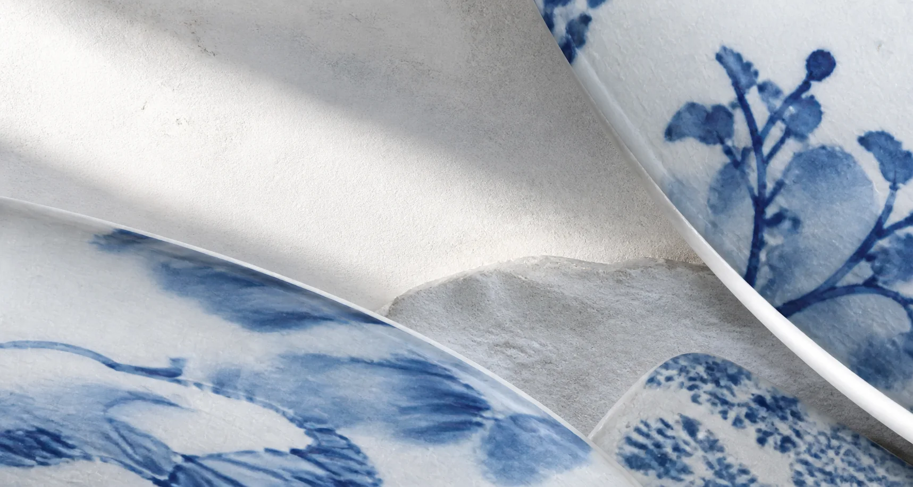

01 / BEIJING · 北京
从宫墙到
城市中轴
一张故宫俯瞰照，作为北京这一章的入口
北京 · 朱红 先从宫城开始，再沿着城市中轴寻找下一座馆
MUSEA
北京 · 博物馆入口IN PREPARATION
故宫博物院
北京 · 宫城与器物
专题筹备中
OPEN / 已上线
中国国家博物馆
北京 · 城市与国家
进入专题 ↗AD FONTES / MUSEUM ATLAS
四座博物馆 · 四条观看路径
AD FONTES / MUSEUM ATLAS
ITINERARIA MUSEORUM SINARUM
03 省份 · 05 座馆 · 02 个已上线专题
从地方进入一座馆，照片在这里找到它们的方向
打开已上线专题：西安碑林博物馆 ↗PERSONAL MUSEUM NOTES / 2026
先选省份，再进入一座馆
PROVINCES
03 北京01 / BEIJING · 北京
一张故宫俯瞰照，作为北京这一章的入口
北京 · 朱红 先从宫城开始，再沿着城市中轴寻找下一座馆
北京 · 宫城与器物
专题筹备中
北京 · 城市与国家
进入专题 ↗02 / SHAANXI · 陕西
从一方碑刻开始，走进西安的石与纸
陕西 · 墨色 字留在石上，照片把它带回今天

03 / HENAN · 河南
从一件器物开始，读一座城的来处
河南 · 青花瓷 白地留给器物，蓝色指向中原的远方
郑州 · 中原文明
专题筹备中
洛阳 · 古都与器物
专题筹备中